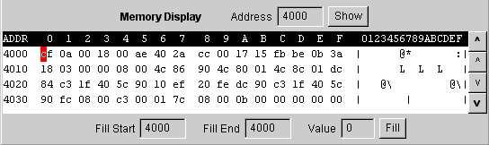

The memory display provides a hexadecimal "dump" of the contents of any 64 byte range of addresses. The display is updated as necessary, however it does not get updated during the execution of a simulation. Type the desired starting location in the Address box, and hit the Enter key. The display can be refreshed at any time with the Show button. The up and down arrow keys scroll the display by line or by page. Locations which are not readable display as "??". These are locations with no assigned memory or register locations not used or nor simulated.
Some register locations have side effects if read by a program. These side effects will not occur if the locations are displayed.
Memory contents can be changed by selecting the digit to change and typing the new value. A red cursor indicates the digit to be changed, and the cursor will advance automatically to the next digit. Attempts to write to invalid locations are ignored, however you can write to ROM or EEPROM.
The display row starting "Fill Start" allows filling a range of memory starting at Fill Start and ending at Fill End. Pressing the Fill button causes the range to be filed with the entered value.
Memory can also be displayed as disassembled machine code by using the Code Viewer.